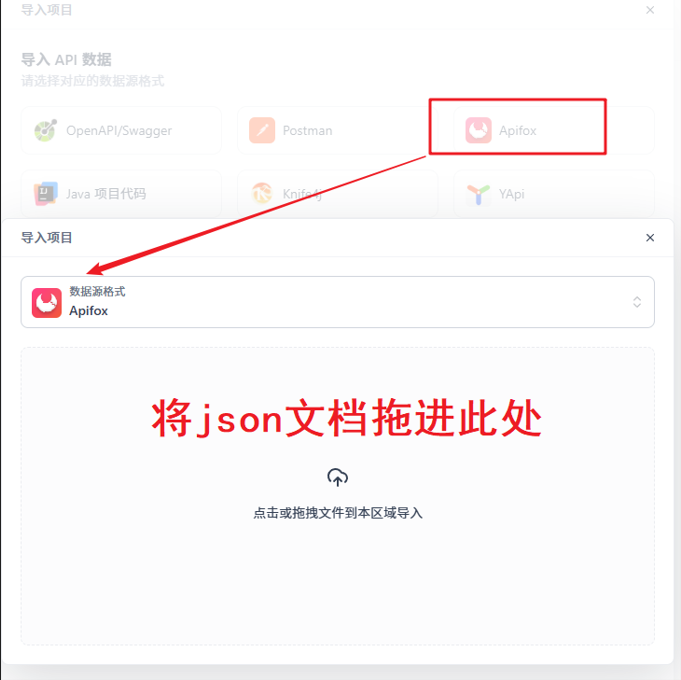

一、Apifox连接模型接口
导入模型接口文档：《Ollama.apifox.json》
提前准备好json格式的接口文件



二、编辑base64编码图片解析的python文件
1
2
3
4
5
6
7
8
9
10
11
12
13
| import base64
# 关联文件
with open('./wzryjing.jpg', 'rb') as src_f:
# 读取图片数据，转成字节数组
bys_data =src_f.read()
# print(bys_data) # 打印字节数组
# 把上述字节数组转成base64编码
result = base64.b64encode(bys_data).decode('utf-8')
print(result) # 打印base64编码
|

复制打印结果：

三、开始解析
将图片base64格式的文档复制到记事本中以备使用

准备接口测试环境（准备必须参数）
1
2
3
4
5
6
7
8
9
10
11
12
13
14
15
16
17
18
19
20
21
| {
"model": "deepseek-r1:1.5b",
"messages": [
{
"role": "user",
"content": "图片中的人物是王者荣耀中的哪位英雄",
"images": [""]
}
],
"stream": false
}
|

将准备好的文档粘贴进图片解析参数中

1
2
3
4
5
| {
"error": "invalid character '\\r' in string literal"
}
|
出现上述错误，是因为粘贴的base64编码的格式不对，注意记事本有无设置自动换行，取消自动换行即可
注意复制时光标需放在最后一个字符末尾，否则还是会识别换行
也要检查最前端是否有其他无关字符或空格存在

测试接口成功：